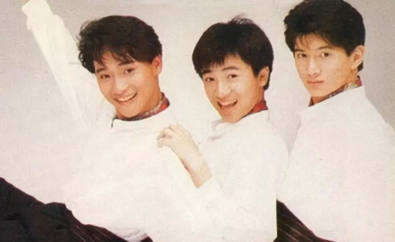
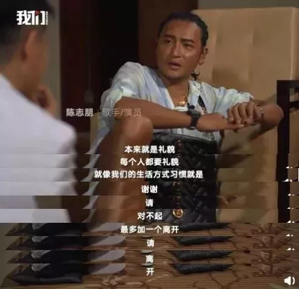
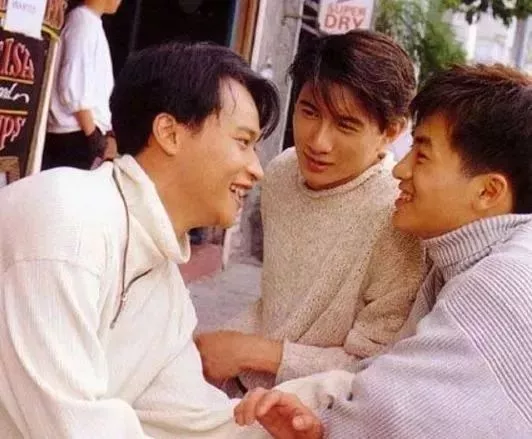
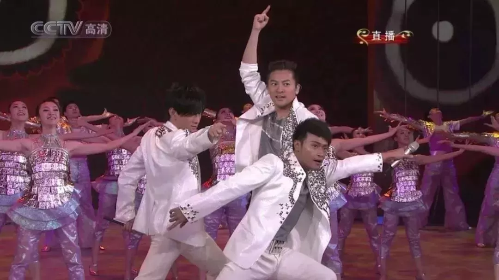

转眼又到了10月份，这个月一直惦记着要更新博客，也一直没有更，除了思想上有了懈怠，更客观的原因是近期任务实在太多，公司的项目，自己接的项目，全叠在一块了，连续数周的熬夜真的是身心俱疲，没有精力总结沉淀，所以就一直搁置着没写，做个预告吧，下篇计划聊一下单点登录的相关内容，其实网上关于这个技术的文章挺多的，但大多数都是概念性和原理性的讲解，偏理论，而没有实际的例子，我准备针对各种实现单点登录的方案各自实现一个demo，所以可能下篇的工作量稍微大些，等完成后，会分享出来。
也不知道10月份结束之前能不能出来，为了不让10月份的更新空着，就写点别的吧。
今天中午吃饭的时候，看了一篇文章，讲的是关于友情的，其实更多的是人情，我觉得还不错，转发分享一下（原文地址:https://mp.weixin.qq.com/s/SdjeG9YMUv4iwyXb6bIj1g）
————————————————以下为转发内容———————————————-
真正的朋友，是各自忙乱，互相牵挂。

前段时间，久未露面的陈志朋，忽然登上了热搜。
在节目《出圈》中，他谈及了之前对苏有朋在节目里提到的小虎队约饭的回应。
“礼貌上的大家都得回应。
现在网友们特别直接，你不回应的话，又说你怎么不合群。”
对公众，这是不留话柄的无奈应付。
对其他两个成员，真的就只是礼貌。
“本来就是礼貌，就像是我们的生活方式习惯是谢谢、请、对不起，最多加一个离开，请离开。”

就算回应了，也可能没法履行。
因为3个人私下很少聚会，甚至连群聊也没有。
我们曾以为一起经历过青春、相约一生一起走的人，如今却成了泛泛之交，甚至路人。
原来，再刻骨的友情，都敌不过人走茶凉。
朋友走着走着就散了……
30多年前，苏有朋、陈志朋、吴奇隆还是现象级偶像团体小虎队的成员，正青春年少。
那时，他们是亲密无间、荣辱与共的兄弟。

大哥吴奇隆每天骑着摩托载顺路的陈志朋在家—公司—学校间折返，细心的他，担心弟弟饿，总给他多买一个便当留在路上吃。
苏有朋年龄小不敢一个人睡，晚上总要两个哥哥陪着，但也会和陈志朋一起，在吴奇隆内心苦闷时，听他倾诉，分担痛苦。
后来，苏有朋高考，两个哥哥专门停工等他。
陈志朋服兵役走时，苏有朋和一向坚强的吴奇隆泣不成声。
“再见”演唱会
随着成员相继服兵役和市场萎缩，1997年小虎队被迫解散，三人从此各奔东西。
起初，他们互相助阵，惺惺相惜。
后来，吴奇隆转战商场，苏有朋专注影视，陈志朋投身歌舞剧，交集和联系渐少；
外界开始有了三人不合的传闻，他们很快用虎年春晚的同台回击了传闻。

但关系似乎开始变得尴尬。
那年春晚，某位主持人在后台看见陈志朋，手指着他，脱口而出：
“你就是小虎队里最不红的吧？”
这件事伤了他的心，被比较，被嘲讽，成为他挥之不去的噩梦。
后来，小虎队合体计划歇菜了。
外界知道的，也只有吴奇隆和苏有朋还在联系。
不过，2016年吴奇隆大婚，久违的陈志朋出现了。
他和苏有朋作为伴郎，见证了大哥的幸福。
但这似乎是昙花一现。
之后，吴奇隆忙于兴旺的家业，苏有朋导演更上层楼，陈志朋，留给大家的只剩“辣眼睛”的不甘挣扎。
问及彼此，不是太忙不清楚，就是网上听说。
到去年，三人的关系就变成了陈志朋和媒体下面的对话：
“转型后身边的艺人朋友。”
“没有。”
“和苏有朋联系多还是吴奇隆多。”
“都一样少。”
而今年，直接变成了礼貌应付。
从亲密到熟悉，再到听闻，最后变成客气，终于，兄弟成了路人。
没有反目，没有撕X，似乎每个人都曾努力过，但说不上哪里微妙，就远了。
人生有时太过残忍，又无可奈何。
生活一路奔波捶打，有人快有人慢，有人风光有人落魄，差距太大，所以渐渐形同陌路。
陈奕迅在《最佳损友》里唱道：
为何旧知己，在最后，变不到老友。
我们曾经那么要好，最后还是败给了时间和现实。
去年，吴孟达在《十三邀》里被问到和周星驰的关系。
前一秒还在品味两人默契合作的他，眼神忽然没了光彩，他抬头又低头，猛吸口气，艰难咽下去才开口：
“我有时候也在想什么原因，就好像现在有一点老死不相往来那种感觉。”
当离开了原来的工作环境后，两人联系越来越少，想再开口都纠结起来。
“到底是他先来找我，还是我先去找他，大家似乎都不知道，该如何突破这个口子。”
公开场合见到，一句“星仔来了”客套完就没了下文。
反复多次后，除了遗憾不知该说什么。
自从2001年合作《少林足球》后，这对成就了31部作品的老搭档，再没合作过。
18年间，星爷转行做导演、开公司，商业版图越做越大；
吴叔嗜赌经历人生低谷，戒赌后又因心脏病少有作品。
两人虽偶有关心，终究是渐行渐远。
说不清为什么，又都默契地没问原因。
当阴差阳错间跌出了对方的生活，往后只剩下各自怀念，各自遗忘。
即便欲买桂花同载酒，终不似，少年游。
其实，陈志朋、苏有朋、吴奇隆，吴孟达和周星驰，都是平凡世界里无数的你和我。
当我们逐渐长大成熟，身边的人越来越多，却变得越来越孤单。
曾经说好不散的友情，可能说着说着就散了，看着看着就淡了，脆弱得不堪一击。
曾经和你一起去食堂吃面，互相打气要考进理想大学，陪伴你度过艰难时光，一起约定共渡岁月的好友，也许在间隔两地后就渐行渐远，不再回头。
大家都有了新同学，新同事，新的社交圈子。
想打电话时，一方总在忙；
好不容易碰到一起，却又因专业不同、工作不同、生活不同而变得无话可说。
当友情的缺口被打开，我们都不知如何修补。
慢慢地，他买了新东西，你没见过；
他去了新地方，你不知道；
他身边有了新的人，你不认识；
他心情不好，你都不知该如何安慰，只能回复“没事的”“过去了”。
曾经你们无缝穿入彼此的空间，如今他的朋友圈变成一条横线。
曾经你们无话不说，知道对方所有秘密，如今却连了解都成为一种奢侈。
年轻时说好一起吃到老玩到老，但人还未变老，誓言已风吹四散。
陈奕迅在《最佳损友》里唱道：
来年陌生的，是昨日最亲的某某。
不打扰，似乎成了我们留给故人最后的温柔。
好友间的关系是如何变淡的？
有人说是环境变了，陪伴少了；有人说是观念不同，聊不下去；有人说是社会地位不一样了，反差太大。
岁月在变迁，彼此在成长。
一个人的社交能量有限，有些人要进来，就注定有人要离开。
升学、工作、结婚、生子，人生的每件大事都是一次不可避免的洗牌。
就像《山河故人》里说的：
“每个人只能陪你走一段路，迟早是要分开的。”
迎来送往，才是生命的常态。
有些人只能共青春，有些人一句话就凉了。
但时间会筛选出对的人。
就像高晓松和老狼。
年轻时，他们一起在清华的草坪砸过酒瓶子，在海南打地铺共患难，好到穿一条裤子。
作为音乐上的黄金搭档，两人拿过当时所有音乐奖的第一名。
后来，由于理念不同两人摔了桌子，从此分道扬镳。
两年后酒吧遇见，高晓松一句“我们以前挺好的”，老狼杯酒泯恩仇，随后就录了《青春无悔》。
之后十几年，高晓松办公司拍电影当评委开脱口秀，老狼不是走穴酒吧唱歌就是在家看书，两人压根不在一条道上。
因为忙，都在北京，却一年见不着几次面
可他们的友情分毫未减。
2011年，高晓松酒驾入狱。
出狱时，老狼给他塞了十万块钱：
“我去年演出比较多，而你在里头吃糠咽菜呢，比较苦。
你一直花钱大手大脚，没钱了，我养你。”
前年，老狼参加《我是歌手》。
决赛上，作为帮唱嘉宾的高晓松为给老友撑场子，从不烫头的他专门烫了头。
排演时他两腿直发抖，但还是硬着头皮上台演唱。
什么是真正的朋友？
不是时刻围在身边，甜言蜜语，而是彼此珍惜，互相理解。
就是虽然你我身在他处，为了梦想各自为战，为了生活各自忙乱，我依然时刻牵挂着你。
真正的好朋友，不会因为时间、距离、环境、圈子的变化而远离。
他们也许不会隔三岔五地与你联系，也许不会经常给你的朋友圈点赞，但只要你有需要，他们一定会第一时间出现在你身边。
就算全世界都远离你，也总有那么一个人，会坚定不移地陪着你，与全世界对抗。
如果你身边也有这样的朋友，请好好维护吧，毕竟——
“哪有什么岁月静好，只不过懂得彼此珍惜”。